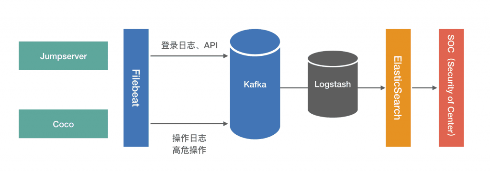

编者注：以下内容根据携程旅行网系统保障中心云平台研发部高级经理熊辉于8月24日在“2019 Jumpserver 堡垒机 Meetup · 上海站”的演讲内容整理而成。
携程旅行网系统保障中心云平台研发部 熊辉
从1999年正式创立至今，携程旅行网（以下简称为携程）在过去的20年里实践并见证了旅行行业的变迁。作为中国在线旅游业的开创者之一，携程将科技创新力源源不断地注入传统旅行业，其在线旅行服务已经覆盖200多个国家和地区，5000多个大中城市。2018年，携程全品牌活跃用户数超过2亿，是全球市值第二的在线旅行服务公司。
全球范围内的业务覆盖依托强大的分布式IT基础设施。在混合云架构下，携程在私有云和公有云环境均拥有大量的IT资产。在“两地三中心”的数据中心架构中，携程的私有云环境运行着超过90000台虚拟机，而在全球范围内，携程在公有云上的虚拟机也超过了2000台。
针对超大规模的IT资产，堡垒机的统一部署、统一登录是非常有挑战的工作。借助Jumpserver堡垒机的创新软件架构和水平扩展能力，携程实现了混合云环境中超大规模IT资产的运维安全审计。Jumpserver堡垒机自上线以来一直保持高效稳定运营。从登录频次上看，携程内部用户登录Jumpserver堡垒机的频次已经从早期部署的5000次/周持续增加至目前的10000次/周。
作为Jumpserver堡垒机的长期用户，携程积累了丰富的Jumpserver堡垒机的部署和运营经验。为了帮助用户更好地理解并使用Jumpserver堡垒机，我们将携程在高可靠部署、权限管控、数据存储等方面的经验分享整理成文，供广大Jumpserver堡垒机用户参考。
Jumpserver的高可靠部署
出于自身的业务需要，携程的Jumpserver采用的是集中式部署的方式。Jumpserver堡垒机在携程的三个数据中心内部进行高可靠部署，隐私数据全部保存在自有数据中心。用户可通过Web页面、XShell客户端和携程的PaaS平台登录到Jumpserver。由于PaaS平台承载了虚机申请、应用发布等任务，很大部分的用户是通过PaaS平台登录到Jumpserver的。这也是携程最终选择集中式部署方式的一个重要原因。
在这样的架构之下，用户访问私有环境的机器是非常方便的。那么，部署在私有环境的Jumpserver是怎样与公有云进行打通的呢？
为了让用户登录多Region的机器，携程基于Jumpserver搭建了集中式的“Jumpserver+分布式网关”的体系。携程首先在数据中心出口建立白名单，并且对接到公有云的SSH Proxy网关，从而建立互信的IP隧道。所有访问公网的IP必须通过SSH Proxy网关。在公有云主机上，利用其提供的安全组功能进行IP table的限制，从而在私有云和公有云之间一一建立可信的访问链路，实现对公有云主机的统一登录。
基于这一架构，携程还利用Jumpserver实现了TOTP（Time-based One-time Password）
认证、网域支持、操作日志记录/审计等功能。其中TOTP算法认证构建在Jumpserver开源版本的MFA多因子认证功能之上。协议方面，对接SSH、WebSocket、RDP、SFTP和RZ等协议，很好地解决了私有云和公有云中IT资产统一登录的问题。
基于Jumpserver的权限管控
对于用户登录Jumpserver堡垒机，携程通过Pool的维度进行权限的管控。每一个Pool下包含若干台机器，将登录堡垒机的用户划分为只读用户组、读写用户组和管理员用户组三类，通过不同的用户组授权管控Pool之下的IT资产。这一架构与Jumpserver的管理模型相互对应，即UserGroup→用户组、Node→Pool、Asset→主机。

当用户发出主机申请的请求时，请求会提交至携程PaaS平台的权限审批系统，审批者通过后PaaS平台调用Jumpserver的接口将用户加入到对应Pool下的用户组中，用户即对该Pool下的所有机器拥有相关的授权。
此外，携程还基于Jumpserver开发了临时授权的功能，以便增进用户权限管理的灵活性。基于该功能，用户可以在一段时限内获得相应授权，到达授权时限后权限自动回收。对于权限到期时用户已登录的机器，携程采用的方式是通过Celery的Task定期扫描临时权限表，当发现临时权限已过期且有机器处在登录状态时，即会下发Kill-Session的Task。这样Jumpserver堡垒机的Coco在同步心跳时对Session状态进行同步，及时终止临时权限到期的Session。
Jumpserver的录像和数据存储
目前，携程将Jumpserver堡垒机的用户、机器和权限信息保存在MySQL数据库中，Celery、Web socket message broker、Task等信息存储在Redis数据库中，录像审计（包括Windows和Linux的操作审计）保存在Ceph对象存储服务系统中，操作日志经过脱敏处理后存储在ElasticSearch中，以便进行查询和分析。
Jumpserver的治理：监控、告警和日志
为了让Jumpserver的运营更加智能化和自动化，携程对其核心组件进行监控。方法是通过在Jumpserver节点和Coco节点部署Filebeat，Filebeat定期进行日志采集。针对操作日志中的高危操作，携程会将其导入携程的SOC（Security of Center）平台，并在该平台进行及时告警。
Jumpserver的发布
Jumpserver容器化部署的方式给携程的堡垒机部署带来了充分的便利性。携程在每个IDC部署多台Jumpserver堡垒机，以保证大规模资产的访问性能。针对Web、Coco和Guacamole都匹配了单独的域名，将其视为独立的应用，用户可直接通过域名进行访问。域名系统挂载在硬件设备之上，以确保Jumpserver组件之间的解耦与高可靠。Jumpserver的发布则通过Ansible Tower统一进行，所有组件均采用容器化部署的方式，每个组件独立进行发布。